Introducción
Esta vignette muestra distintas gráficas para mostrar métricas de
MetaGES, usando el paquete metagesToolkit mediante las
siguientes funciones .
Número de entidades según su estado de publicacion
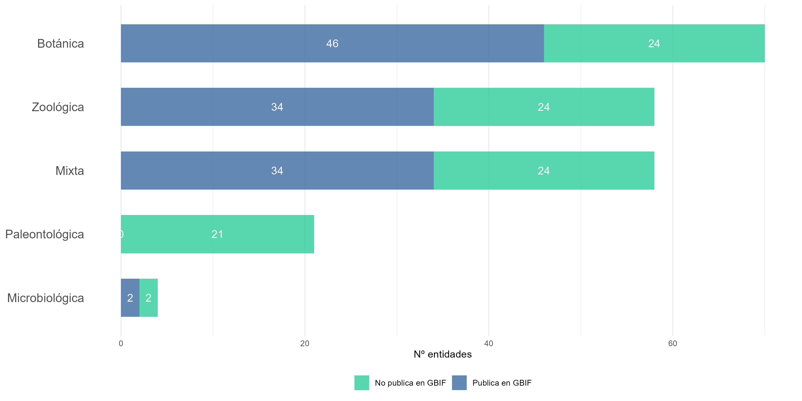
Número de colecciones y bases de datos según su estado de
publicacion
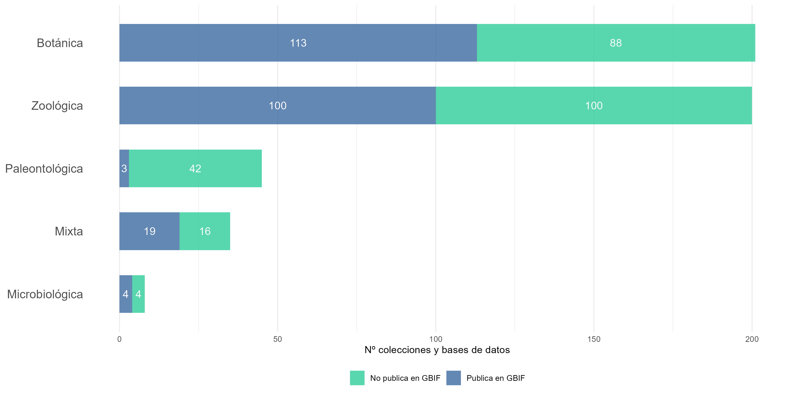
Evolución del número de colecciones y bases de datos registradas por
año
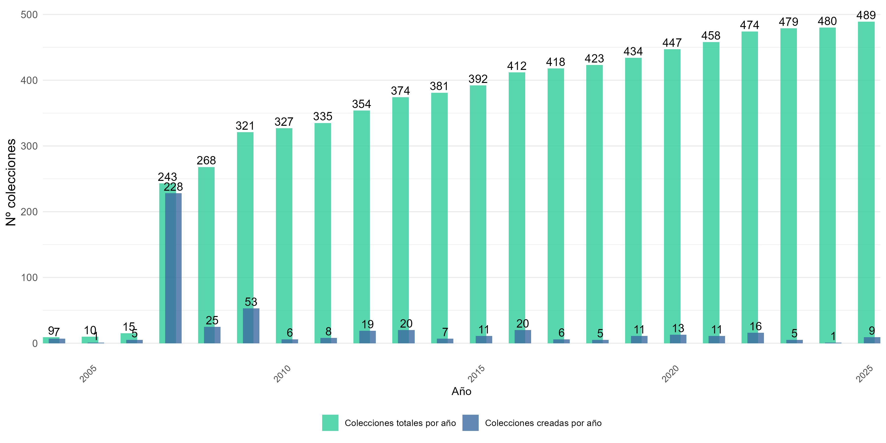
Proporción de colecciones y bases de datos por disciplina
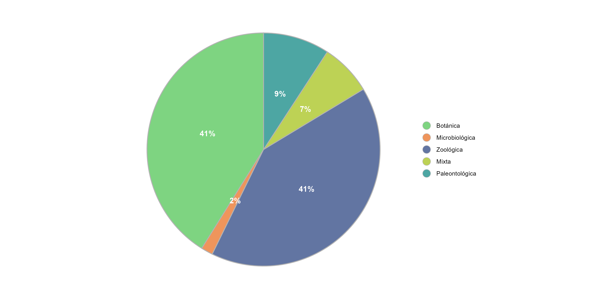
Proporción de recursos por sector
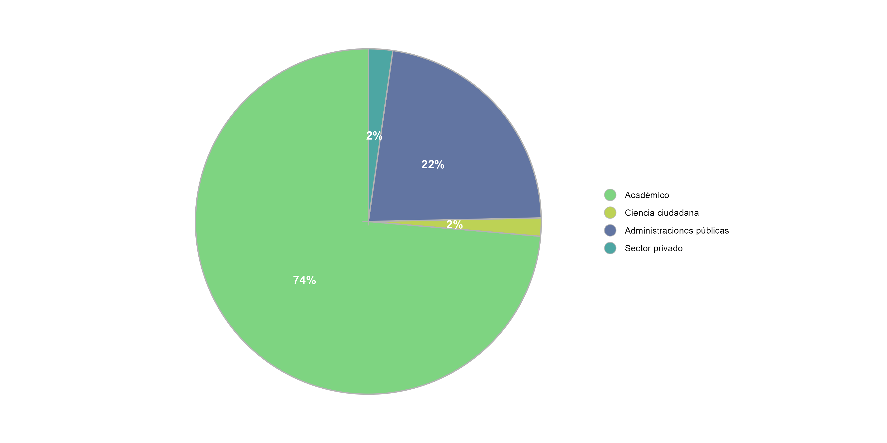
Proporción de registros por sector
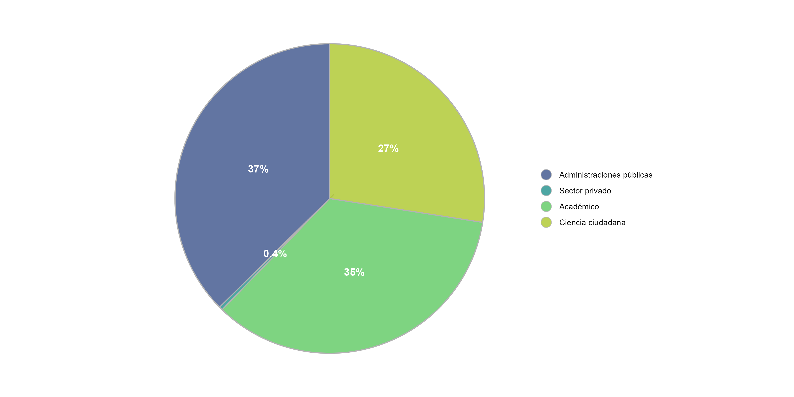
Evolución del número de registros por basisOfRecord

Evolución (logarítmica) del número de registros por
basisOfRecord

Colecciones biológicas
Número de ejemplares de las mayores colecciones botánicas
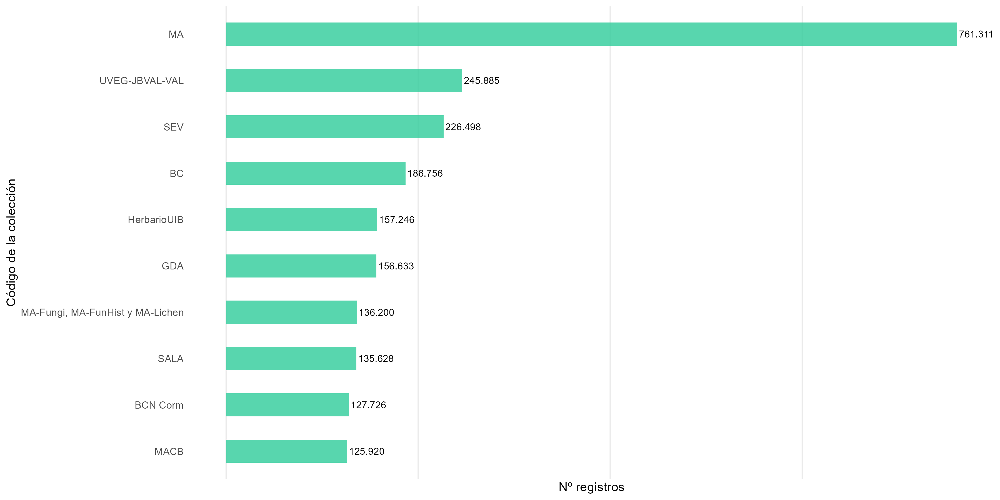
Número de ejemplares de las mayores colecciones botánicas de
plantas
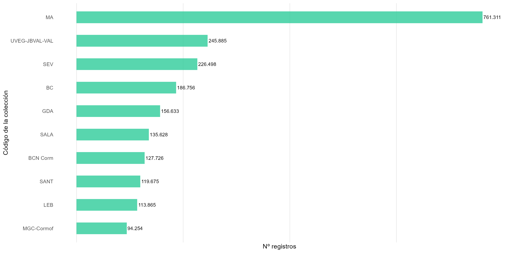
Número de ejemplares de las mayores colecciones botánicas de
algas
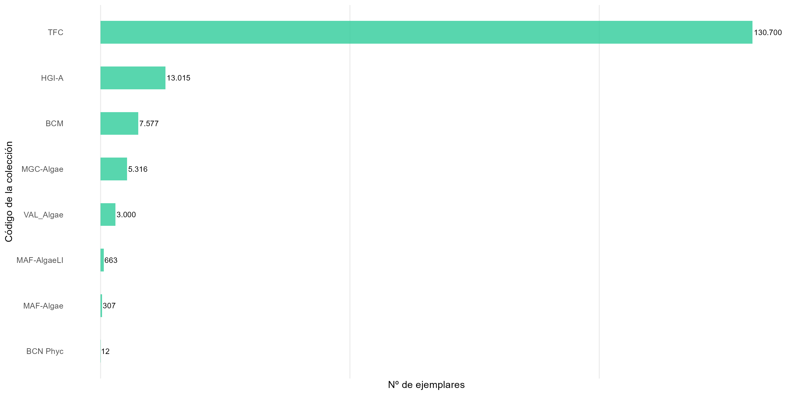
Número de ejemplares de las mayores colecciones botánicas de hongos
y líquenes
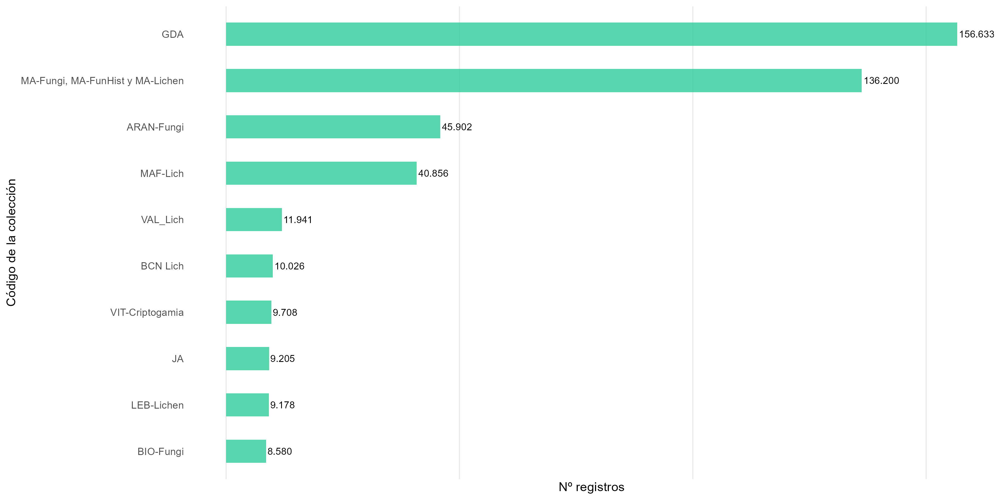
Número de ejemplares de las mayores colecciones botánicas
mixtas
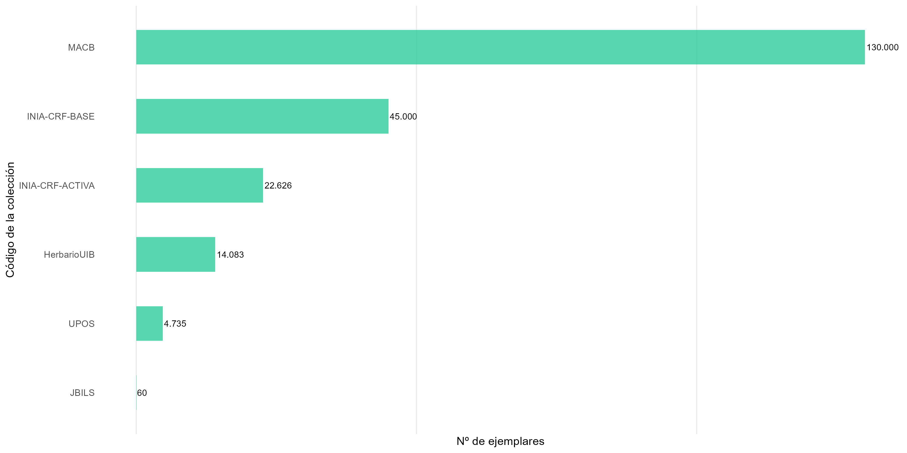
Número de ejemplares de las mayores colecciones zoológicas
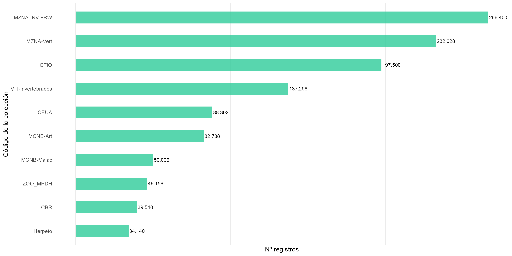
Número de ejemplares de las mayores colecciones zoológicas de
invertebrados
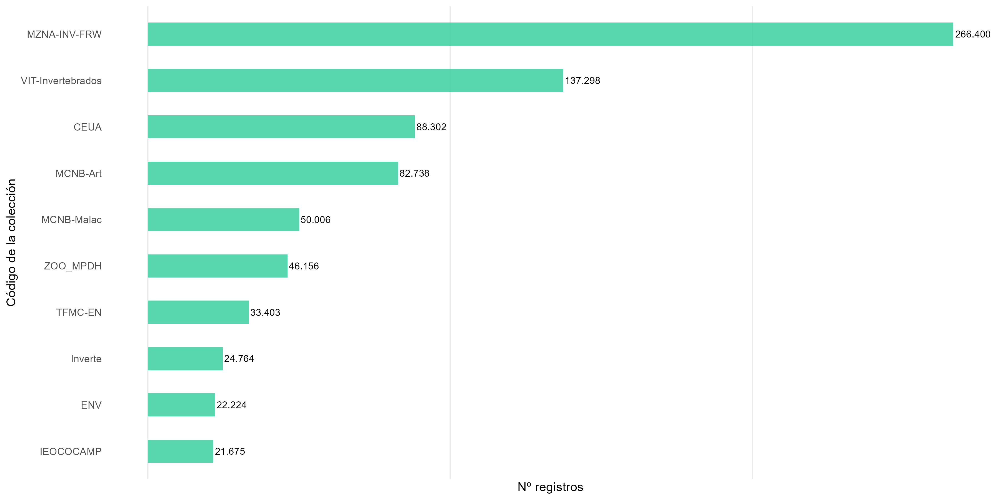
Número de ejemplares de las mayores colecciones zoológicas de
vertebrados
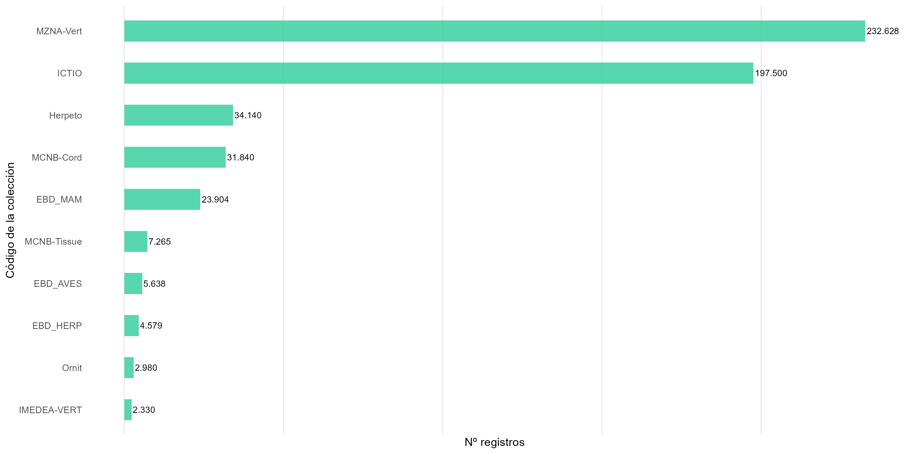
Número de ejemplares de las mayores colecciones zoológicas de
invertebrados y vertebrados
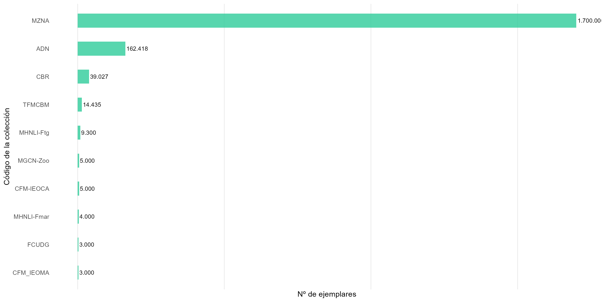
Número de ejemplares de las mayores colecciones microbiológicas
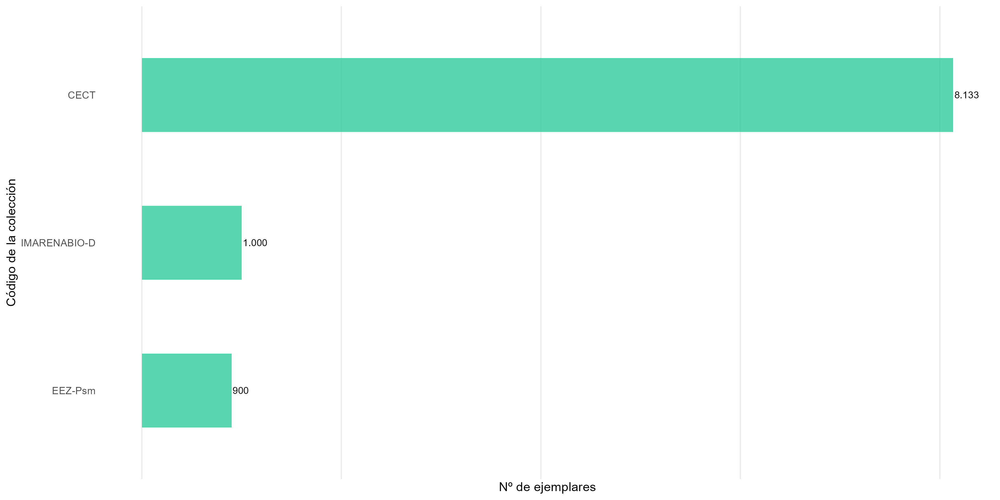
Número de ejemplares de las mayores colecciones paleontológicas
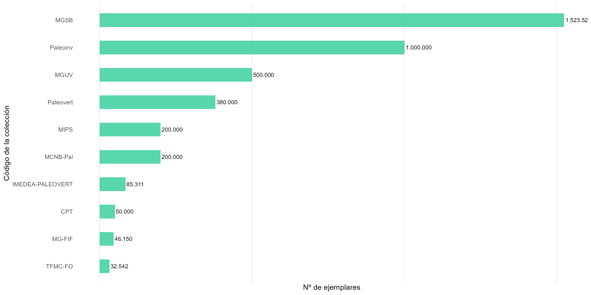
Número de ejemplares de las mayores colecciones mixtas
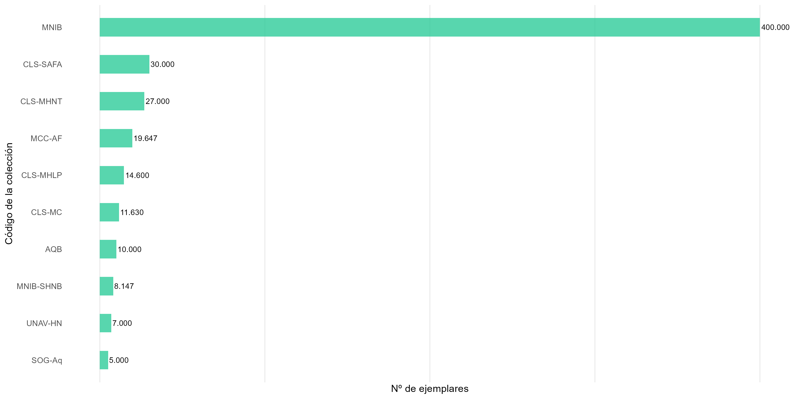
Bases de datos
Número de registros de las mayores bases de datos
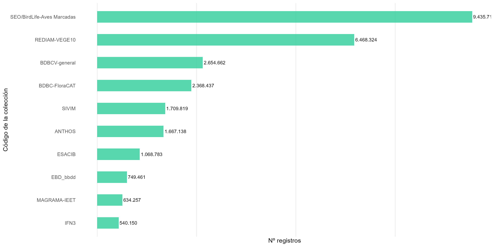
Proporción de bases de datos por disciplina
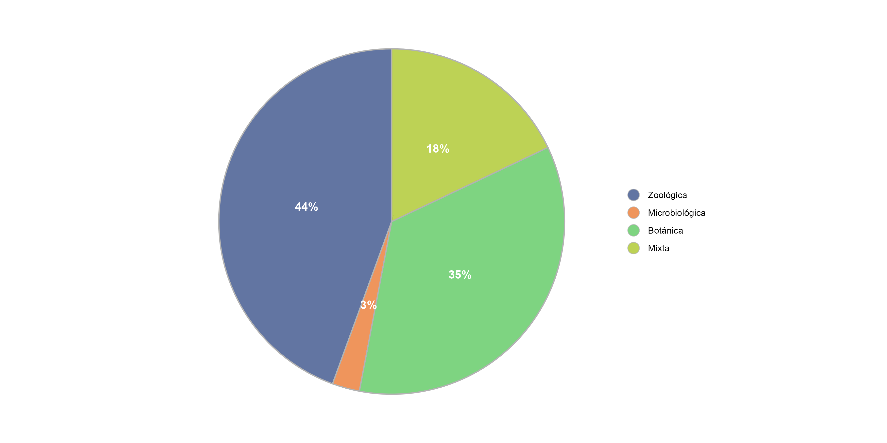